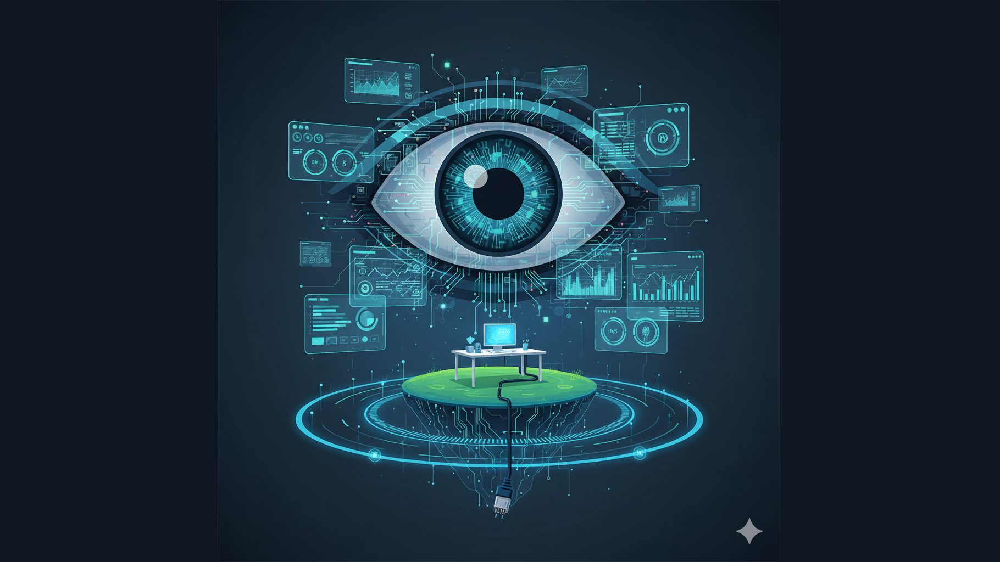

Episódio 02: As Sete Magníficas e o "Big Brother" Digital

A Transição de 1994: Do Pascal para a Dependência Americana
Quando quem inspirou esta série procurou seu primeiro emprego como desenvolvedor em 1994, enfrentava um marco crucial: a morte da "Reserva de Informática" brasileira. Aquela política dos anos 80, criticada por ser ineficiente e cara, havia criado uma ilusão de soberania tecnológica. Com seu fim, o Brasil abriu as portas completamente para o software americano.
Ele começou em Pascal, uma linguagem fortemente tipada, estruturada, perfeita para engenheiros. Mas Pascal era como um Proálcool de software: uma solução nacional, cara e lentamente sendo abandonada pelo mercado global. O que o Brasil deveria ter feito era investir em criar seu próprio ecossistema. Em vez disso, aceitou consumir o que vinha dos EUA.
As Sete Magníficas: O Novo Cartel
Se em 1971 as "Sete Irmãs" do petróleo (Exxon, Shell, BP, etc.) controlavam a energia do mundo, hoje as "Sete Magníficas" controlam o "petróleo dos bits":
- Nvidia: Controla os GPUs, o processamento de inteligência artificial. Sem seus chips, nada compila rápido na IA.
- Microsoft: Dona da nuvem (Azure) e do sistema operacional padrão. É o dono da "fábrica" onde seu código Java roda.
- Apple: Controla o "copo" (o iPhone) onde o cliente final consome.
- Google (Alphabet): O indexador do mundo. Se não está no SDK deles, não existe.
- Amazon: A infraestrutura física e digital (AWS) por onde tudo passa.
- Meta: O protocolo de comunicação social, a rede onde a gente "vive" digitalmente.
- Tesla: A ponte entre energia, robótica e IA.
O Vendor Lock-in de 18 Anos
Quem inspirou esta série desenvolveu por 18 anos em SDKs americanos. Esse tempo ensinou uma lição dolorosa: quando você constrói tudo em cima de uma ferramenta proprietária, você não é mais o dono do seu produto. É apenas um implementador da visão de alguém mais poderoso.
Em Java, por exemplo, você não controla como o garbage collector agirá. Você não sabe por que sua visibilidade caiu no algoritmo do Google. Você apenas aceita o comportamento da "caixa-preta". E quando a Big Tech muda a versão ou o modelo de cobrança, seu código (sua indústria) simplesmente para de compilar.
A Vigilância Algorítmica: O Big Brother Digital
No regime militar que Napolitano descreve, a vigilância era feita pelo SNI (Serviço Nacional de Informações) com fichas de papel, censura prévia e espiões infiltrados. Era visível, combatível.
Hoje, o controle das Sete Magníficas é um "panóptico digital" onde nós mesmos escrevemos os logs. A telemetria é compulsória. Toda vez que você instancia um objeto ou faz um `import` de um SDK americano, você alimenta o Big Brother com metadados. Ele sabe o que você digita, o que você pesquisa, o código que você sobe no GitHub, com quem você fala e quais são seus reflexos emocionais.
O controle é preditivo. Eles não esperam você protestar; eles ajustam o algoritmo para que você nem chegue a pensar no protesto. É a censura por asfixia de tráfego, não por decreto.
O "Free Tier" que Custa Caro
Assim como o "Milagre Econômico" dos militares parecia um brinde mas a conta chegou em 1980 com juros altíssimos, o Google oferece seu serviço "gratuitamente". Mas se você não paga pelo SDK, o produto é o seu comportamento preditivo. Seus dados estão à venda no BigQuery deles.
A gente achou que estava se tornando uma potência, mas estava apenas se endividando.
O Isolamento como Resistência
Consciente dessa realidade, quem inspirou esta série tomou uma decisão radical: isolou-se tecnicamente do controle do Google. Não é paranoia; é um "Hard Fork" consciente. Ele parou de fazer a "dança da tirinha" para agradar a IA do LinkedIn ou do Google e decidiu rodar sua vida em "Localhost".
Para um desenvolvedor sênior, essa é a única forma de manter a integridade do seu "core code" em tempos de Big Brother digital.
Reflexão final: O controle algorítmico das grandes empresas de tecnologia é um desafio real para a autonomia individual e nacional. Como podemos equilibrar inovação, conveniência e soberania? Sua opinião é fundamental para esse debate. Compartilhe suas ideias e acompanhe o próximo episódio para aprofundar essa discussão!
Nota: Esta série foi inspirada por reflexões de profissionais da área, preservando o anonimato.
Referências Bibliográficas
- NAPOLITANO, Marcos. 1964: História do Regime Militar Brasileiro. São Paulo: Editora Contexto, 2014.